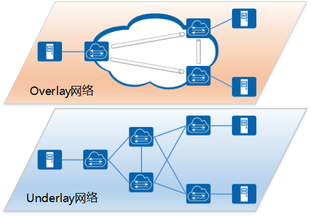
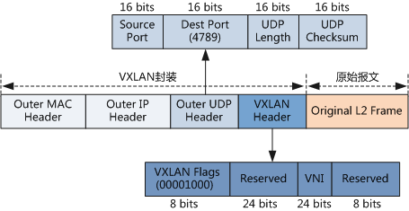
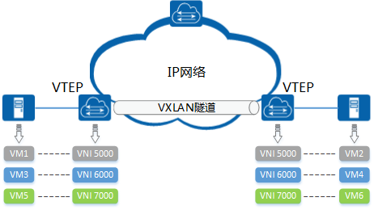
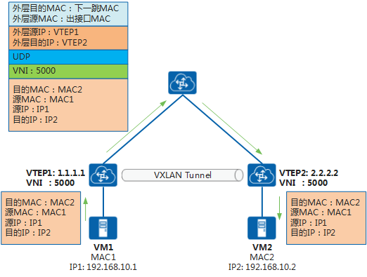
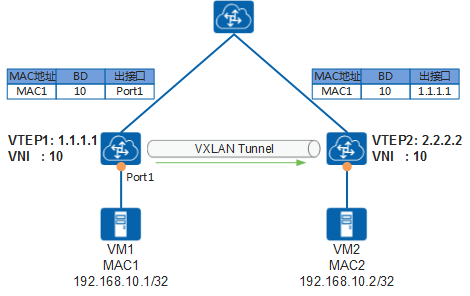
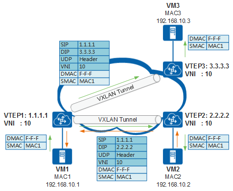
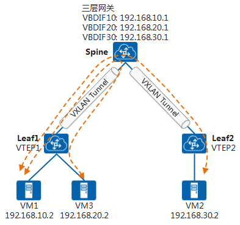
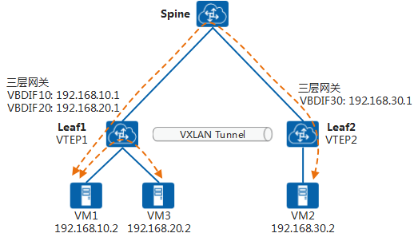
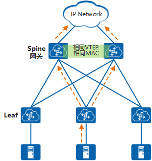
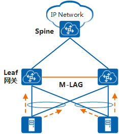

第七章 Overlay网络
1. Overlay介绍¶
如[图7-1]所示，Overlay网络是将已有的物理网络（Underlay网络）作为基础，在其上建立叠加的逻辑网络，实现网络资源的虚拟化。
图7-1 Overlay网络概念图

{kind=link}
Overlay网络是建立在已有物理网络上的虚拟网络，具有独立的控制和转发平面，对于连接到Overlay的终端设备（例如服务器）来说，物理网络是透明的，从而可以实现承载网络和业务网络的分离。
为什么需要Overlay网络？
作为云计算核心技术之一的“服务器虚拟化”已经被数据中心普遍应用。随着企业业务的发展，虚拟机数量的快速增长和虚拟机迁移已成为一个常态性业务。由此也给传统网络带来了以下一些问题：
-
虚拟机规模受网络规格限制
在传统二层网络环境下，数据报文是通过查询MAC地址表进行二层转发，而网络设备MAC地址表的容量限制了虚拟机的数量。
-
网络隔离能力限制
当前主流的网络隔离技术是VLAN，由于IEEE 802.1Q中定义的VLAN ID只有12比特，仅能表示4096个VLAN，无法满足大二层网络中标识大量租户或租户群的需求。
-
虚拟机迁移范围受网络架构限制
为了保证虚拟机迁移过程中业务不中断，则需要保证虚拟机的IP地址、MAC地址等参数保持不变，这就要求业务网络是一个二层网络，且要求网络本身具备多路径的冗余备份和可靠性。传统的STP、设备虚拟化等技术只适用于中小规模的网络。
针对上述问题，为了满足云计算虚拟化的网络能力需求，逐步演化出了Overlay网络技术。
-
针对虚拟机规模受网络规格限制
虚拟机发出的数据包封装在IP数据包中，对网络只表现为封装后的网络参数。因此，极大降低了大二层网络对MAC地址规格的需求。
-
针对网络隔离能力限制
Overlay技术扩展了隔离标识的位数（24比特），极大扩展了隔离数量。
-
针对虚拟机迁移范围受网络架构限制
Overlay将以太报文封装在IP报文之上，通过路由在网络中传输。通过路由网络，虚拟机迁移不受网络架构限制。而且路由网络具备良好的扩展能力、故障自愈能力、负载均衡能力。
Overlay技术有多种，例如VXLAN、NVGRE、STT等，其中VXLAN是目前获得最广泛支持的Overlay技术。
2. VXLAN¶
VXLAN（Virtual eXtensible Local Area Network，虚拟扩展局域网），是由IETF定义的NVO3（Network Virtualization over Layer 3）标准技术之一，采用MAC-in-UDP的报文封装模式，如[图7-2]所示，原始报文在VXLAN接入点（被称为VTEP）加上VXLAN帧头后再被封装在UDP报头中，并使用承载网络的IP/MAC地址作为外层头进行封装，承载网络只需要按照普通的二三层转发流程进行转发即可。
图7-2 VXLAN报文格式

{kind=link}
以VXLAN技术为基础的Overlay网络架构模型如[图7-3]所示。
图7-3 VXLAN网络模型

{kind=link}
-
VTEP（VXLAN Tunnel Endpoints，VXLAN隧道端点）
VXLAN网络的边缘设备，是VXLAN隧道的起点和终点，进行VXLAN报文的封装、解封装等处理。VTEP既可以部署在网络设备上（网络接入交换机），也可以部署在vSwitch上（服务器上的虚拟交换机）。
-
VNI（VXLAN Network Identifier，VXLAN 网络标识符）
VNI是一种类似于VLAN ID的网络标识，用来标识VXLAN二层网络。一个VNI代表一个VXLAN段，不同VXLAN段的虚拟机不能直接二层相互通信。
-
VXLAN隧道
两个VTEP之间建立的逻辑隧道，用于传输VXLAN报文。业务报文在进入VXLAN隧道式进行VXLAN、UDP、IP头封装，然后通过三层转发透明地将报文转发给远端VTEP，远端VTEP对报文进行解封装处理。
2.1. VXLAN报文转发过程¶
下面以同网段的VM间相通简单介绍VXLAN网络中的报文转发过程。
图7-4 VXLAN报文转发过程示意图

{kind=link}
- VM1发送目的地址为VM2的报文。
- VTEP1收到该报文后进行VXLAN封装，封装的外层目的IP为VTEP2。封装后的报文，根据外层MAC和IP信息，在IP网络中进行传输，直至到达对端VTEP2。
- VTEP2收到报文后，对报文进行解封装，得到VM1发送的原始报文，然后将其转发至VM2。
3. 二层MAC学习及BUM报文转发¶
在VXLAN网络中，同子网虚拟机的互通是通过查找MAC表进行转发。如下图所示，VM1给VM2发送报文时，经过VTEP1转发，VTEP1上需要学习到VM2的MAC地址。
最初的VXLAN标准并没有定义控制平面，VTEP之间无法传递学习到的主机MAC地址。但是VXLAN有着与传统以太网非常相似的MAC学习机制，当VTEP接收到VXLAN报文后，会记录源VTEP的IP、虚拟机MAC和VNI到本地MAC表中，这样当VTEP接收到目的MAC为此虚拟机的MAC时，就可以进行VXLAN封装并转发。
图7-5 MAC学习示意图

{kind=link}
以VTEP2学习到VM1的MAC过程为例：
- VM1发送目的地址为VM2的报文。
- VTEP1接收到报文后，进行VXLAN封装，并将其转发至VTEP2。同时，VTEP1可以学习到VM1的MAC地址、VNI、入接口。
- VTEP2接收到报文后，对报文进行解封装。同时，VTEP2可以学习到VM1的MAC地址、VNI、入接口（为VTEP1）。
经过上述流程，VTEP1和VTEP2可以学习到VM1的MAC地址。VTEP1和VTEP2学习到VM2的MAC地址过程与之类似。
3.1. BUM报文转发¶
前面描述的报文转发过程都是已知单播报文转发，如果VTEP收到一个未知地址的BUM报文（广播、组播、未知单播）如何处理呢。与传统以太网BUM报文转发类似，VTEP会通过泛洪的方式转发流量。
图7-6 BUM报文转发示意图

{kind=link}
以上图中VM1想向VM2发送报文为例，因为VM1不知道VM2的MAC地址，所以会发送ARP广播报文请求VM2的MAC地址。
- VM1发送ARP广播请求，请求VM2的MAC地址。
-
VTEP1收到ARP请求后，因为是广播报文，VTEP1会在该VNI内查找所有的隧道列表，依据获取的隧道列表进行报文封装后，向所有隧道发送报文，从而将报文转发至同子网的VTEP2和VTEP3。
同时，VTEP1会学习到VM1的MAC地址。
-
VTEP2和VTEP3接收到报文后，进行解封装，得到VM1发送的原始ARP报文，然后转发至VM2和VM3。
同时VTEP2、VTEP3会学习到VM1的MAC地址。
-
VM2和VM3接收到ARP请求后，比较报文中的目的IP地址是否为本机的IP地址。VM3发现目的IP不是本机IP，故将报文丢弃；VM2发现目的IP是本机IP，则对ARP请求做出应答。
ARP应答报文为已知单播报文，转发流程与前文描述的一致，此处不在赘述。
-
经过ARP应答流程，VTEP1和VM1就可以学习到VM2的MAC地址。后续的转发流程同已知单播转发流程一致。
4. VXLAN网关部署¶
与不同VLAN需要通过三层网关互通一样，VXLAN中不同VNI的互通也需要有三层网关。
在典型的“Spine-Leaf”VXLAN组网结构下，根据三层网关的部署位置不同，VXLAN三层网关可以分为集中式网关和分布式网关。
4.1. 集中式网关部署¶
集中式网关是指将三层网关集中部署在Spine设备上，如下图所示，所有跨子网的流量都经过三层网关进行转发，实现流量的集中管理。
图7-7 集中式网关组网示意图

{kind=link}
集中式网关部署方式可以对跨子网流量进行集中管理，网关的部署和管理比较简单，但是因为同Leaf下跨子网流量也需要经过Spine转发，所以流量转发路径不是最优。同时，所有通过三层转发的终端租户的表项都需要在Spine上生成。但是，Spine的表项规格有限，当终端租户的数量越来越多时，容易成为网络瓶颈。
4.2. 分布式网关部署¶
VXLAN分布式网关是将Leaf节点作为VXLAN隧道端点VTEP，每个Leaf节点都可作为VXLAN三层网关，Spine节点不感知VXLAN隧道，只作为VXLAN报文的转发节点。
图7-8 分布式网关组网示意图

{kind=link}
在Leaf上部署VXLAN三层网关，即可实现同Leaf下跨子网通信。此时，流量只需要在Leaf节点进行转发，不再需要经过Spine节点，从而节约了大量的带宽资源。同时，Leaf节点只需要学习自身连接虚拟机的ARP表项，而不必像集中三层网关一样，需要学习所有虚拟机的ARP表项，解决了集中式三层网关带来的ARP表项瓶颈问题，网络规模扩展能力强。
对于分布式网关场景，因为需要在三层网关间传递主机路由才能保证虚拟机间互通，所以需要有控制平面来进行路由的传递。08 BGP EVPN就是描述EVPN作为控制平面技术在VXLAN网络里的应用。
5. 双活网关¶
在传统网络中，为了保证高可靠性，通常部署多个网关进行备份。与传统网络类似，VXLAN网络也支持Overlay层面的双活网关。
5.1. 集中式网关场景下多活网关¶
在典型的“Spine-Leaf”组网结构下，Leaf作为二层网关，Spine作为三层网关。多个Spine配置相同的VTEP地址、虚拟MAC地址，从而可以将多个Spine虚拟成一个VXLAN隧道端点。这样使得无论流量发到哪一个Spine设备，该设备都可以提供网关服务，将报文正确转发给下一跳设备。
图7-9 集中式网关场景下多活网关组网示意图

{kind=link}
5.2. 分布式网关场景下双活接入¶
在分布式网关场景下，Spine作为透传设备，Leaf作为三层网关。通过在Leaf上部署M-LAG，可以实现双活接入，即服务器可以双活接入到多个Leaf。
图7-10 分布式网关场景下双活接入

{kind=link}
6. 本章小结¶
本章节介绍了VXLAN概念及报文转发流程等内容。VXLAN可以基于已有的IP网络，通过三层网络构建出一个大二层网络。部署VXLAN功能的可以是物理交换机或服务器上的虚拟交换机（vSwitch），物理交换机作为VTEP的优势在于设备处理性能比较高，可以支持非虚拟化的物理服务器之间的互通，但是需要物理交换机支持VXLAN功能；vSwitch作为VTEP的优势在于对网络要求低，不需要网络设备支持VXLAN功能，但是vSwitch处理性能不如物理交换机。
从前文的介绍可以知道VXLAN通过泛洪方式进行MAC学习，这是因为早期的VXLAN没有控制平面。下一章节会介绍作为VXLAN控制平面的技术——EVPN，以及如何通过EVPN实现VXLAN隧道自动建立和MAC路由学习。